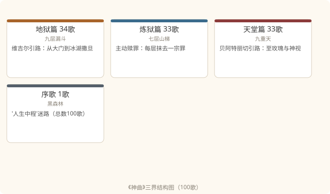

神曲
一、基本信息
| 作者 | 但丁 |
|---|---|
| 成书/出版 | 约1308—1321年（Britannica），流亡中写成 The Divine Comedy — Encyclopaedia Britannica（百科全书） |
| 国别/地区 | 意大利 |
| 时代 | 古代 · 中世纪—文艺复兴前夜 |
| 体裁 | 长篇叙事诗（三歌部，100歌） |
| 语言 | 意大利语（托斯卡纳俗语） |

二、创作背景
写作于但丁流放期间（约1308—1321，Britannica）：一个被故乡判处死刑的诗人，以一部作品审判了整个已知世界——把教皇、皇帝、仇人一一安放进地狱或天堂。
原题《喜剧》（La commedia）：中世纪文体分类中，以苦难开始、幸福结束者为'喜剧'；'神圣的'（divina）形容词由薄伽丘时代的读者加于书名（通说待核）。
中世纪宇宙观的总集成：托勒密天文学、亚里士多德—托马斯主义哲学、圣经释经学与但丁个人的政治神学在此合成一个完整的世界图景。
三、内容脉络
《地狱篇》（Inferno，34歌）：1300年复活节前的'人生中程'（35岁），但丁在黑森林迷路，被维吉尔（象征理性）引路下地狱——漏斗形九层：从大门、冥河到第九层冰湖，罪按'悖离爱'的程度排列（色欲、贪食、贪婪、愤怒为上四层，异端、暴力、欺诈为下三环，背叛在冰湖中心），撒旦三口撕咬犹大、布鲁图斯与卡西乌斯。
《炼狱篇》（Purgatorio，33歌）：炼狱山七层平台，对应七宗罪的反面——骄傲、嫉妒、愤怒、怠惰、贪财、贪食、色欲；灵魂在这里主动赎罪。但丁逐层攀登，每层有净化仪式与唱诗；山顶为地上乐园，维吉尔告退——理性到头之处，天恩接手（Britannica：Virgil departs at the summit）。
《天堂篇》（Paradiso，33歌）：贝阿特丽切（象征神学/天恩）引但丁飞升九重天（月、水星、金星、太阳、火星、木星、土星、恒星天、水晶天），诸福灵各居其位而仍凝望上帝；终章在玫瑰形的幸福者大会中，但丁得见三位一体的一瞥——'推动太阳和其他群星的爱'（末行 L'amor che move il sole e l'altre stelle，原文公有领域）。
四、主要人物表
| 人物 | 身份 | 说明 |
|---|---|---|
| 但丁（'我'） | 旅人·作者·主人公 | 西方文学史上第一位把自己写成史诗主人公的世俗作家 |
| 维吉尔 | 古罗马诗人 | 理性与人间智慧的向导，无法入天堂——异教徒的极限 |
| 贝阿特丽切 | 但丁终生之爱的化身 | 从《新生》的人间女子升华为神学之爱的引导者（Britannica：Beatrice, as depicted by him, became 'one of the most celebrated fictionalized women in literature'） |
| 尤利西斯（地狱26歌） | 希腊英雄 | 因'越界求知'被罚入地狱——中世纪与文艺复兴两种价值观交战的著名形象 |
| 弗朗切斯卡与保罗 | 地狱第二层的一对恋人 | '那天读了这故事的书页我们再没有抬起头'（名句意译，原文待核）——因共读爱情小说而生的爱 |
| 教皇尼科洛三世等 | 地狱第八层受罚者 | 但丁把在世或已故的教皇、政敌钉进地狱——文学的'审判' |
五、主题与艺术特点
- 罪与救赎的秩序：地狱—炼狱—天堂三界的等级对应着爱之悖离与回归——一座'道德宇宙'（Britannica：punishments perfectly correspond to sins）。
- 俗语的胜利：以意大利俗语写最高主题，'革命性影响'西方文学（Britannica：revolutionary impact）。
- 流亡者的审判：但丁把现实中无法伸张的正义写进永恒秩序——文学作为最高法庭。
- 理性与天恩：维吉尔（理性）引路而止于乐园门，贝阿特丽切（天恩）接续——中世纪哲学的核心命题的戏剧化。
- 艺术特点：terza rima 三行连环韵、宏大严整的数字结构（3×33+1=100歌）、每个灵魂的具体性与普遍性并存。
六、影响与评论
- Britannica：'one of the world's great works of literature'，塑造西方对来世的想象，影响后世作家与艺术家。
The Divine Comedy — Encyclopaedia Britannica（百科全书） - Britannica：俗语写作的革命性影响——使意大利语成为西欧数百年的文学语言。
The Divine Comedy — Encyclopaedia Britannica（百科全书） - 校勘与译本：Petrocchi 校勘本（1966—67修订1994）为标准底本；英译传统自 Henry Boyd（1802）至 Singleton、Mandelbaum、Hollander 等（Britannica 列举）。
The Divine Comedy — Encyclopaedia Britannica（百科全书） - 对后世的影响：乔伊斯《尤利西斯》地狱章、博尔赫斯、艾略特（《荒原》题词引《地狱篇》）——但丁是现代主义最深的地下河（本条为文学史通说，具体引证待核）。
The Divine Comedy — Encyclopaedia Britannica（百科全书）
七、阅读建议
- 神学与中世纪宇宙观前置知识需求大（三位一体、七宗罪、亚里士多德灵魂论）。
- 人物六百余位（历史+神话+当代政敌），注释本是必需品。
- 诗节密集（100歌），建议分三个歌部推进，每歌部配一次通读+精读。
- 田德望译《神曲》（人民文学出版社，散文体全译）：学界通行全译。
- 黄国彬译《神曲》（华语世界诗体全译）：韵体选择。
- 英译：Charles Singleton（散文体）/ John Ciardi / Robert & Jean Hollander（Britannica 列举）。
先读《地狱篇》全卷（最有戏剧性）→ 读《炼狱篇》选歌（如第七歌、末二歌）→ 最后攻《天堂篇》的终章（第33歌）。配对但丁年表与佛罗伦萨党争背景。
八、待核实
- 成书分卷年代（地狱篇约1308—14、炼狱篇约1313—18、天堂篇约1316—21——学界推算）本页取整段区间。
- '神曲'书名'神圣'一词由薄伽丘时代所加之说（Boccaccio 讲稿中的 la divina 称呼）待核。
- 末行原文逐字核对（田德望/黄国彬译本）。
- 尤利西斯章（地狱第26歌）的解读史（但丁对古典英雄的'惩罚'争议）待核。
本页主要来源
但丁的其他收录作品：神曲